Как сделать рамку в Word
1. Как сделать простую рамку в Word на титульном листе
Этот вариант хорошо подходит для первой страницы документа, а также других ситуаций, когда нужно сделать рамку по краям листа, чтобы содержимое выглядело более презентабельно.
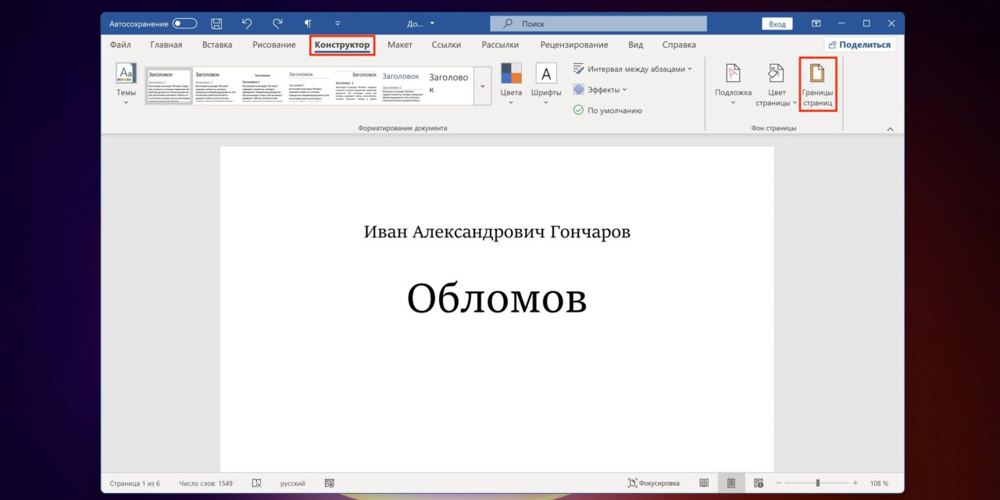Переключитесь на вкладку «Конструктор» и кликните по кнопке «Границы страниц».
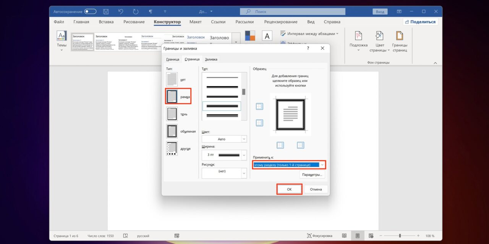Выберите «рамка», «Применить к: только 1-й странице» и по желанию установите тип границы, её цвет и ширину.
После нажатия OK выбранная рамка появится по краям страницы.
2. Как сделать простую рамку в Word на всех страницах
Добавить одинаковую рамку ко всем страницам в документе тоже просто. Принцип тот же, что в предыдущем способе.
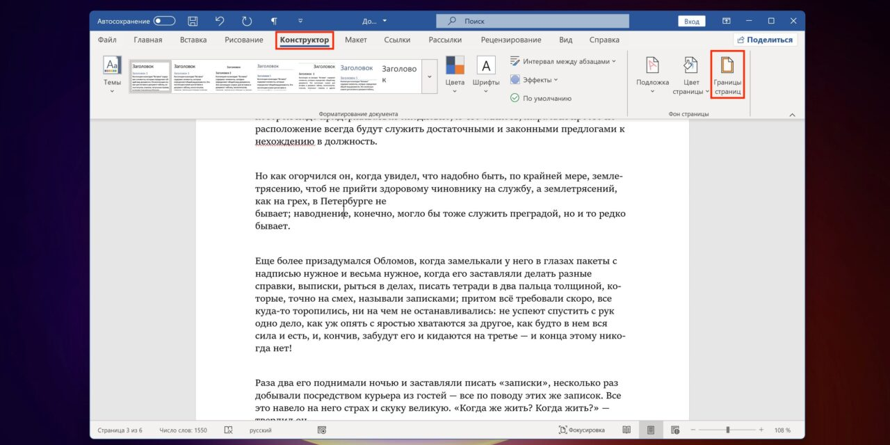Точно так же перейдите на вкладку «Конструктор» и нажмите «Границы страниц».
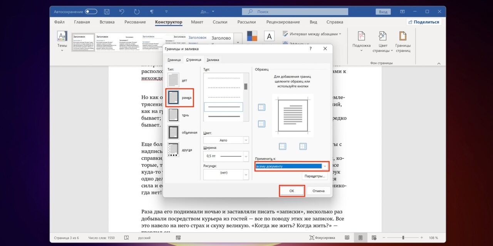Далее кликните «рамка», установите параметры границ и выберите «Применить к: всему документу».
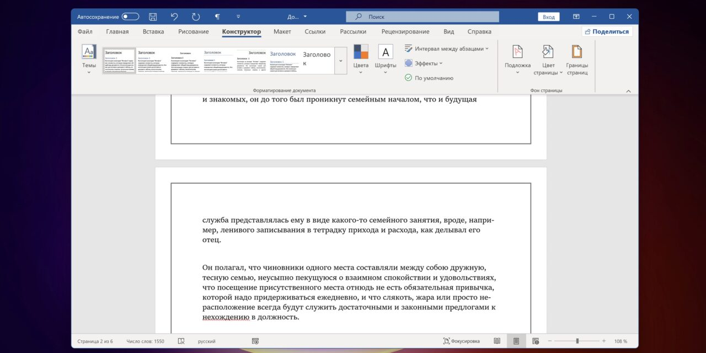Теперь указанное оформление применится сразу для всех существующих страниц и автоматически будет добавлено к новым.
3. Как сделать простую рамку в Word для отдельной страницы
Обрамить одну из страниц, которая не является титульной, чуть сложнее, но тоже можно. Для этого придётся сначала сделать её отдельным разделом с помощью разрывов, а уже затем применить настройки границ.
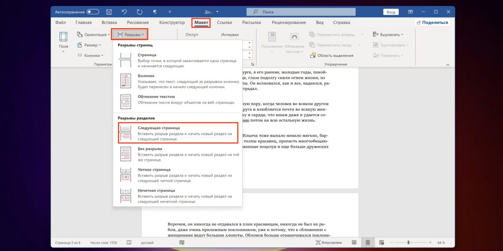Установите курсор в конец страницы, которая идёт перед той, где нужна рамка. На вкладке «Макет» кликните «Разрывы» и затем — «Следующая страница».
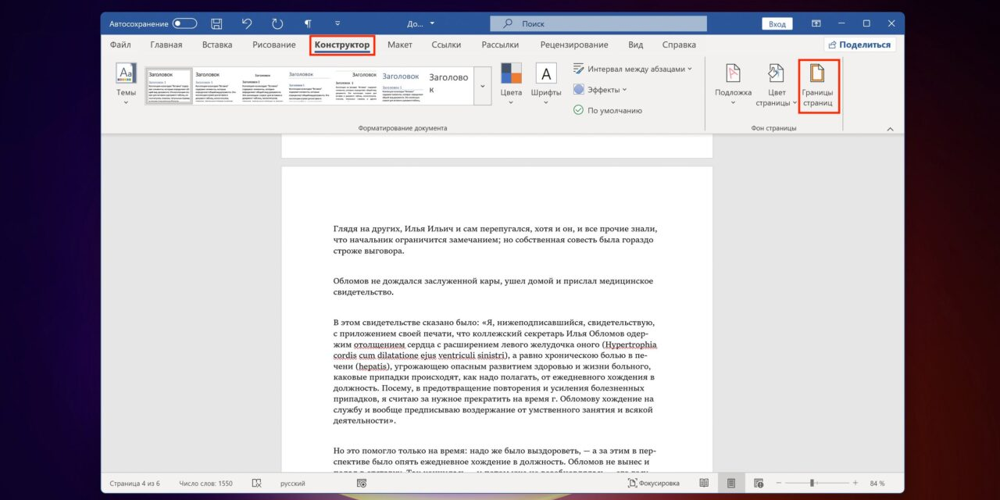После этого поставьте курсор в конец страницы, где будет рамка, и так же создайте разрыв через «Макет» → «Разрывы» → «Следующая страница».
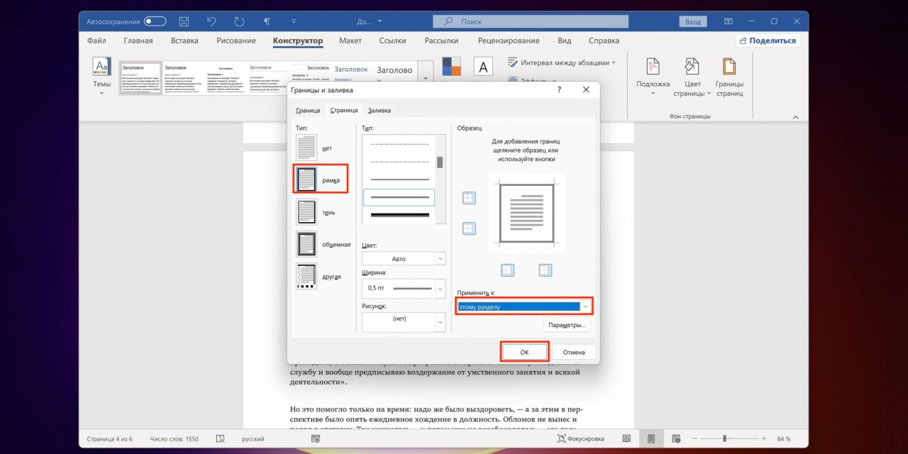Теперь переключитесь на вкладку «Конструктор» и нажмите «Границы страниц».
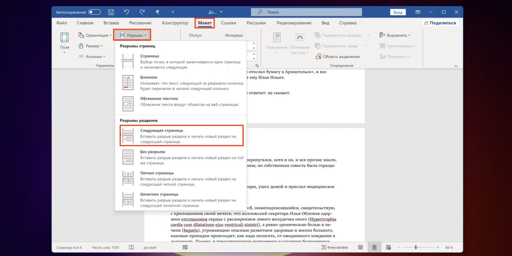Кликните «рамка», задайте желаемые тип, цвет и толщину, а затем выберите «Применить к: этому разделу».
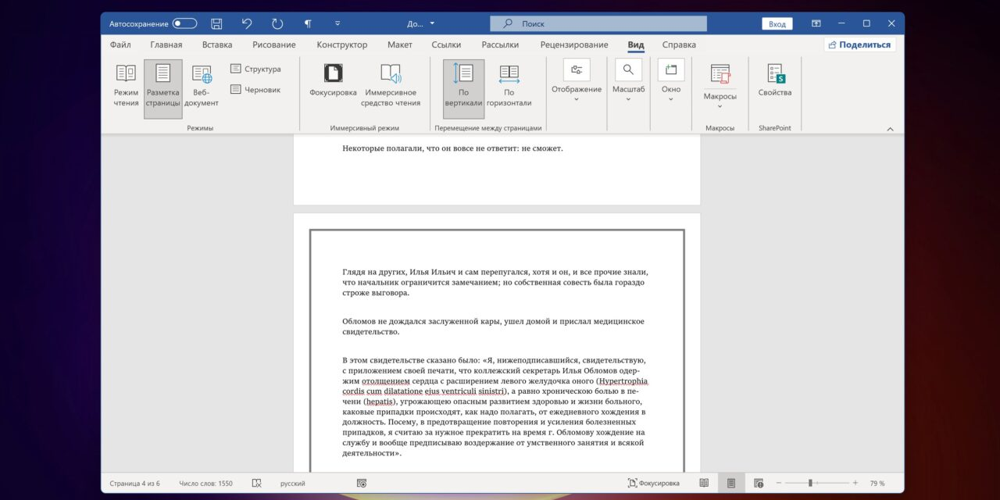Рамка появится на указанной странице.
4. Как сделать простую рамку в Word для абзаца или строки
Иногда нужно сделать рамку вокруг отдельного элемента текста. Для этого в Word тоже есть соответствующая функция.
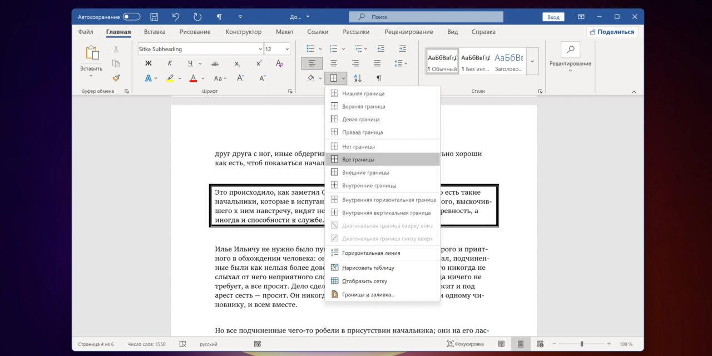Выделите нужный абзац или строку, а затем на вкладке «Главная» раскройте меню «Границы» и выберите «Все границы».
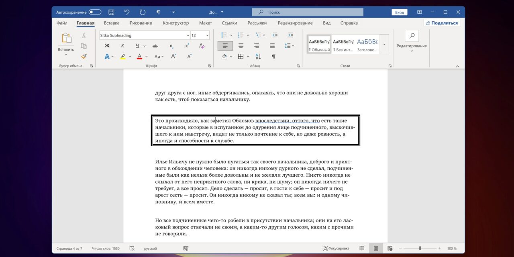После этого для выделения фрагментов рамкой достаточно будет просто кликать по кнопке. При этом будут применяться последние настройки обрамления. Чтобы их изменить, выберите здесь же в выпадающем меню «Границы и заливка».
5. Как сделать красивую графическую рамку в Word для отдельной страницы
Рамки также можно использовать и для творческого оформления. Конечно, для официальных документов это не вариант, но для всевозможных объявлений, буклетов и прочего доступные графические рамки вполне подойдут.
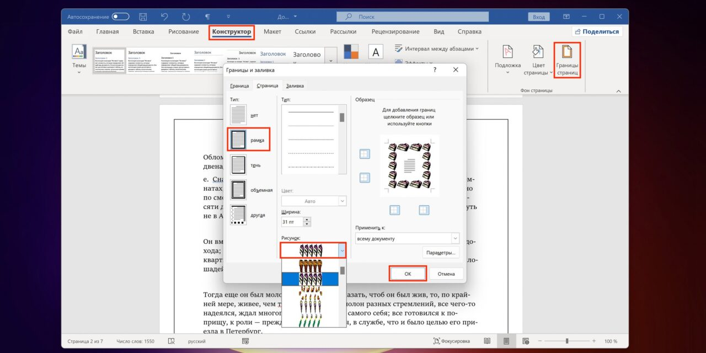Как и с обычными рамками, откройте меню «Границы и заливка» через «Конструктор» → «Границы страниц». Выберите слева «рамка», а затем — «Рисунок» и найдите желаемое оформление.

Подобные настройки доступны только для страниц. Отдельные абзацы так выделить нельзя.